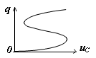

Получение системы уравнений сложной
нелинейной цепи представляет довольно трудную задачу. При этом большое значение
имеет выбор переменных, однозначно определяющих преобразования энергии в цепи.
Целесообразным является выбор переменных, приводящий к системе уравнений первого
порядка с наименьшим числом независимых величин, необходимых и достаточных для
определения (при заданных входных воздействиях и начальных условиях в момент t0) напряжений и токов всех ветвей цепи для любого
момента t > t0.
Этим условиям отвечает метод
переменных состояния, в котором в качестве переменных состояния цепи выбирают потокосцепления (или токи) индуктивных и заряды (или напряжения) ёмкостных элементов.
Выбор потокосцепления или тока в качестве переменных состояния нелинейных индуктивных элементов, заряда или напряжения нелинейных ёмкостных зависит от вида их характеристик, представленных в табл. 1.7.
Указанный в табл. 1.7 выбор
переменных состояния динамической цепи позволяет сопровождать отдельные этапы
составления уравнений, а также процесс анализа схемами замещения,
составленными только из резистивных элементов и источников энергии.
Т а б л и ц а 1.7
|
Нелинейный элемент |
Вид характеристики |
Примечание |
Выбор переменной состояния |
|
Характеристика Ψ(i) немонотонна и управяется током iL |
Переменной состояния цепи должен быть ток iL |
||
|
Характеристика Ψ(i) немонотонна и управляется потокосцеплением Ψ |
Переменной состояния цепи должно быть потокосцепление Ψ |
||
|
Характеристика q(u) немонотонна и управляется напряжением uC |
Переменной состояния цепи должно быть напряжение uC |
||
|
 |
Характеристика
q(u) немонотонна и управляется зарядом q |
Переменной
состояния цепи должен быть заряд q |
П р и м е ч а н и е. При использовании численных методов для монотонных характеристик оказывается более удобным принимать в качестве переменных состояния заряды ёмкостных и потокосцепления индуктивных элементов.